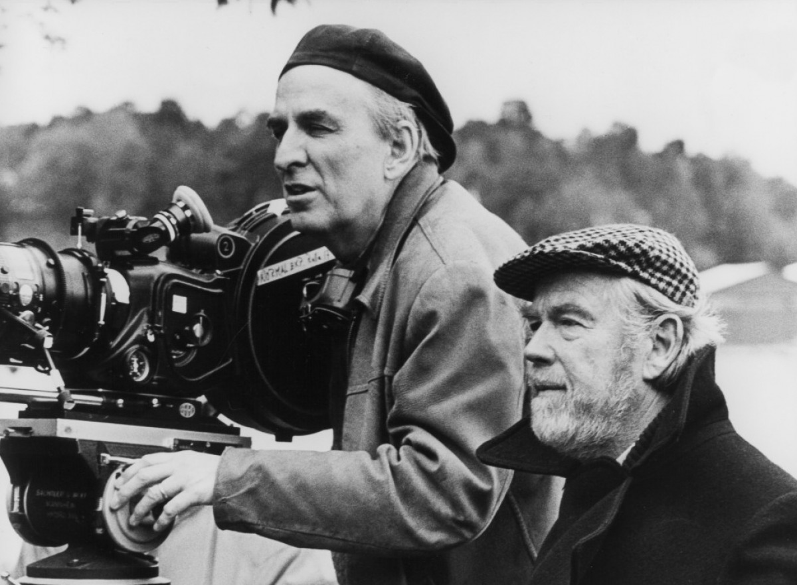

In the latter half of 1895, brothers Auguste and Louis Lumière filmed a number of short scenes with their invention, the Cinématographe. On 28 December 1895, the brothers gave their first commercial screening in Paris (though evidence exists of demonstrations of the device to small audiences as early as October 1895).
